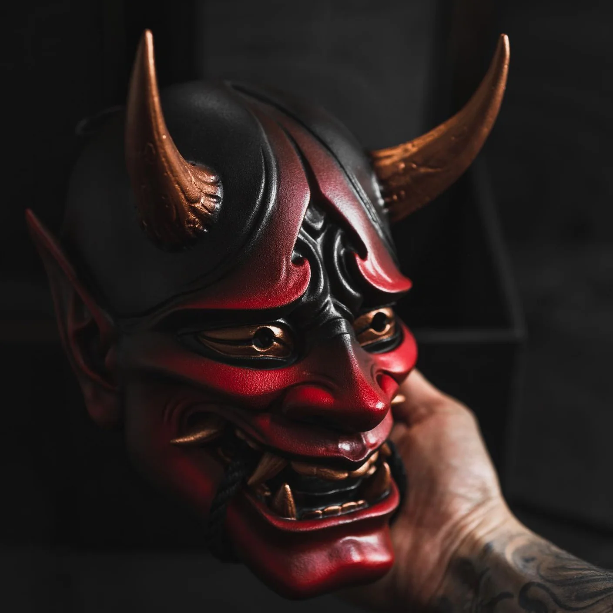
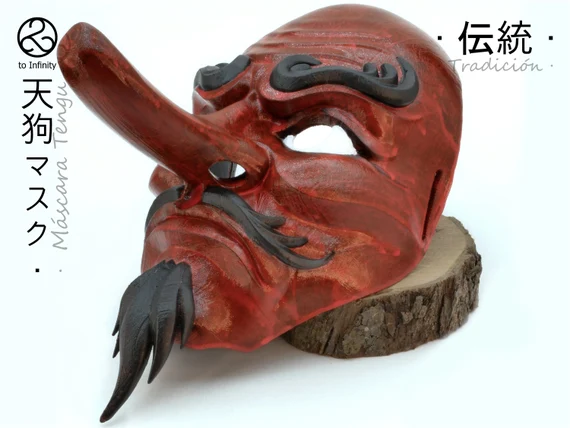
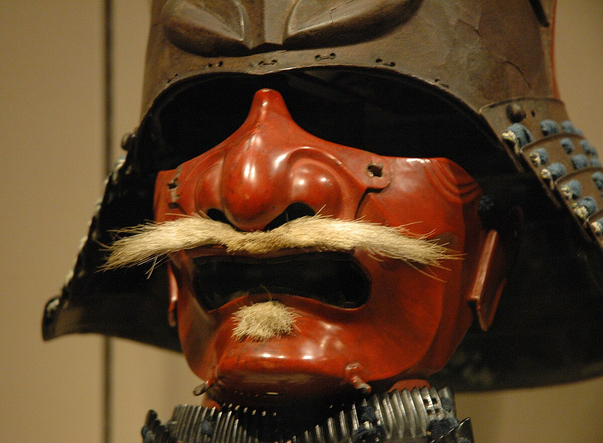
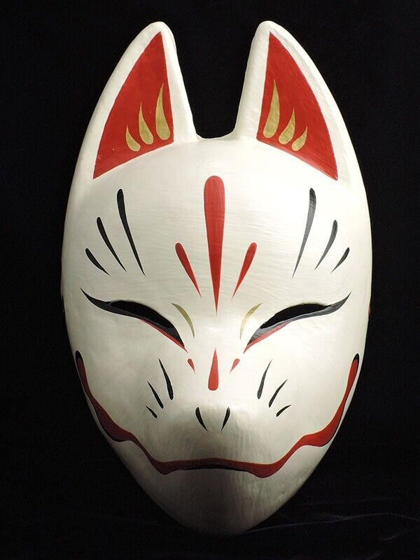

A japán kultúra egyik legismertebb és legikonikusabb eleme a maszkviselés hagyománya. Japánban már a 6. század óta használnak maszkokat, kezdetben vallási szertartások és rituálék részeként, valamint a gonosz szellemek elűzésére. Az idők során a maszkok szerepe kibővült: ma már színházi előadásokban, fesztiválokon, karneválokon és divatkiegészítőként is megjelennek.
Mi az a japán maszk?
A japán maszk olyan arcfedő eszköz, amelyet hagyományosan szövetből, papírból vagy egyéb anyagokból készítenek, és a viselő személyazonosságának elrejtésére szolgál. Ezek a maszkok változatos formákban és méretekben készülnek. Gyakran jelennek meg színházi produkciókban, valamint a kamisibai, azaz a hagyományos japán mesemondás alkalmával. A maszkok a japán kultúra szerves részét képezik, szerepük kiterjed a vallási rituáléktól a szórakoztatásig.
Miért hordanak japán maszkot az emberek?
A maszkviselés okai sokrétűek. Egyesek számára divatos kiegészítő, mások nap- vagy szennyeződés elleni védelemként használják. Sokan egészségügyi okokból viselnek maszkot, míg mások hiedelmek vagy vallási szokások miatt teszik. Van, aki azért hordja, hogy ne ismerjék fel, mások az ősök előtti tiszteletadásként. A maszk az identitás elrejtésének, az egyediség kifejezésének, valamint a hagyományok tiszteletének egyik eszköze. Előfordul, hogy egyszerűen csak a különleges megjelenés miatt viselik.
A japán maszkok jelentősége
A japán színház, különösen a nó előadások, gyakran alkalmaznak maszkokat, hogy egy-egy karakter személyiségjegyét vagy érzelmi állapotát fejezzék ki. A maszkok stilizáltak és mély jelentéssel bírnak. Egy-egy maszk ismerős isteneket, démonokat, állatokat, vagy a japán mitológia híres szereplőit jeleníti meg. Más maszkok érzelmeket vagy természeti jeleneteket szimbolizálnak. A vallási szertartásokban, gyógyító rituálékban és jelmezes ünnepségeken is fontos szerepet játszanak.
A japán maszkok népszerűsége
Az utóbbi években a japán maszkok iránti érdeklődés világszerte megnőtt. A maszkok a japán kultúra szimbólumává váltak. Sokak szerint eredetileg a gonosz szellemek elleni védelemként terjedtek el, mára azonban a tisztelet és csodálat kifejezésének eszközei lettek. Van valami sejtelmes és különleges ezekben a maszkokban – lehet, hogy épp a titokzatosságuk miatt vonzóak. Szerepelnek horrorfilmekben, videójátékokban, cosplayben és hagyományos ünnepeken is.
Miért olyan népszerűek a japán maszkok?
A japán maszkok különösen népszerűek a cosplay és szerepjáték rajongói körében. Ennek több oka is van: a maszk lehetőséget ad az identitás megváltoztatására, izgalmas karakterek megjelenítésére, valamint önkifejezésre. Továbbá szorosan kapcsolódnak a japán történelemhez, kultúrához, sőt a popkultúrához is.
A legismertebb japán maszkfajták
| Név |
Leírás |
| Oni maszk |
démonokat ábrázoló, félelmetes arcvonásokkal |
| Tengu maszk |
hosszú orrú, madárszerű mitikus lények |
| Szamuráj maszk (Men yoroi) |
harcosok által viselt, ijesztő megjelenésű páncélmaszkok |
| Kitsune maszk |
rókát ábrázoló maszk, gyakran a szellemvilághoz kapcsolódik |
Oni maszk – a démoni erő megtestesítője
Az Oni maszkok a japán folklór félelmetes démonait ábrázolják. Az oni lények gyakran szarvakkal, hegyes fogakkal és vad tekintettel jelennek meg, és bár gonosz természetűek, néha védelmező szerepük is lehet. Az ilyen maszkokat hagyományosan fesztiválokon, például a Szecubun ünnepen viselik, amikor babokkal "űzik el" a gonoszt („Oni wa soto!” – „Démon kifelé!”). A maszk tehát nemcsak ijesztő, hanem a rossz elűzésének szimbóluma is.

Tengu maszk – a hegyek szelleme
A Tengu maszk hosszú orráról és gyakran vörös színéről ismert. A tenguk madárszerű, természetfeletti lények, akik eredetileg veszélyes szellemek voltak, később viszont a harcművészetek mestereiként és védelmezőként jelentek meg. A Tengu maszkokat színházi előadásokon és templomi ünnepségeken viselik, és a bölcsesség, valamint az éberség szimbólumai. Bár félelmetesnek tűnnek, gyakran szolgálnak példaképként is.

Szamuráj maszk (Men yoroi) – a harcosok arca
A szamuráj maszkok, más néven men-yoroi, a harcosok páncéljának részei voltak. Ezek a maszkok nemcsak a fizikai védelem céljából készültek, hanem azért is, hogy a szamurájokat félelmetesebbnek láttassák az ellenség szemében. A maszkokon gyakran láthatók dühös arckifejezések, bajuszok vagy démoni vonások. A szamurájmaszk a bátorság, becsület és elszántság jelképe lett, és ma is népszerű a japán történelem iránt érdeklődők körében.

Kitsune maszk – a rókaszellem misztikuma
A Kitsune maszk a rókát ábrázolja, amely fontos szereplő a japán mitológiában. A rókák az Inari istennő hírnökei, akik képesek alakot váltani, és gyakran bölcs, mágikus lényekként jelennek meg. A Kicune maszkokat különösen a shinto szertartásokon és ünnepeken viselik, például az Inari Matsuri idején. Ezek a maszkok az éleslátás, ravaszság és spirituális kapcsolat szimbólumai.
